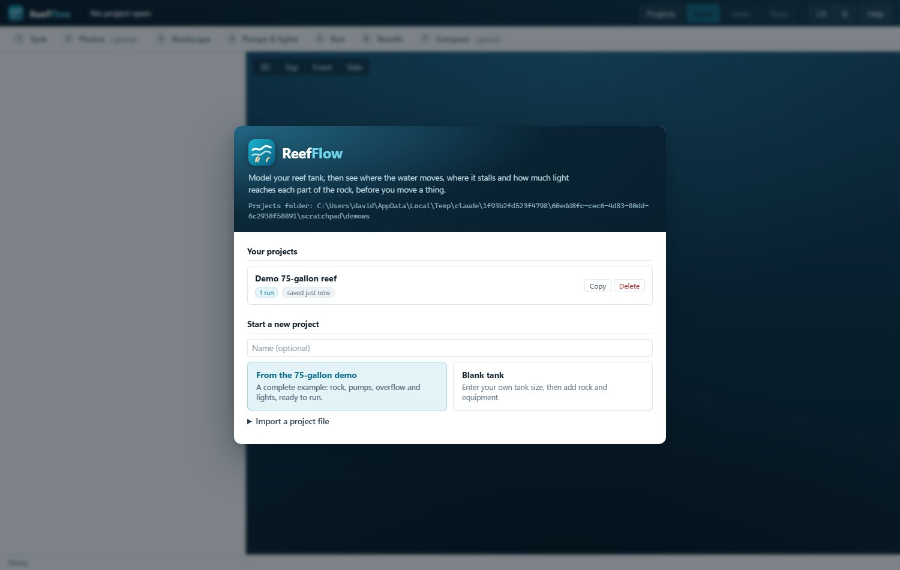
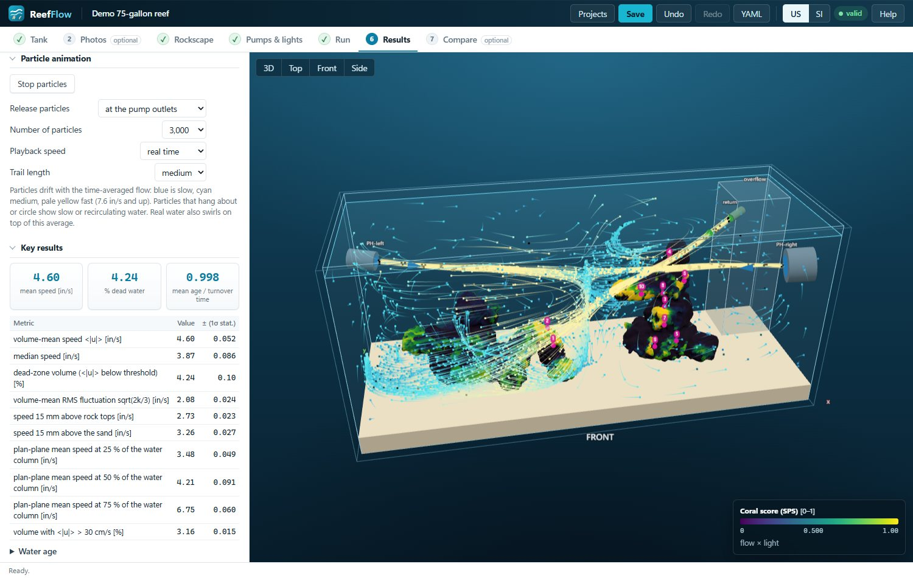
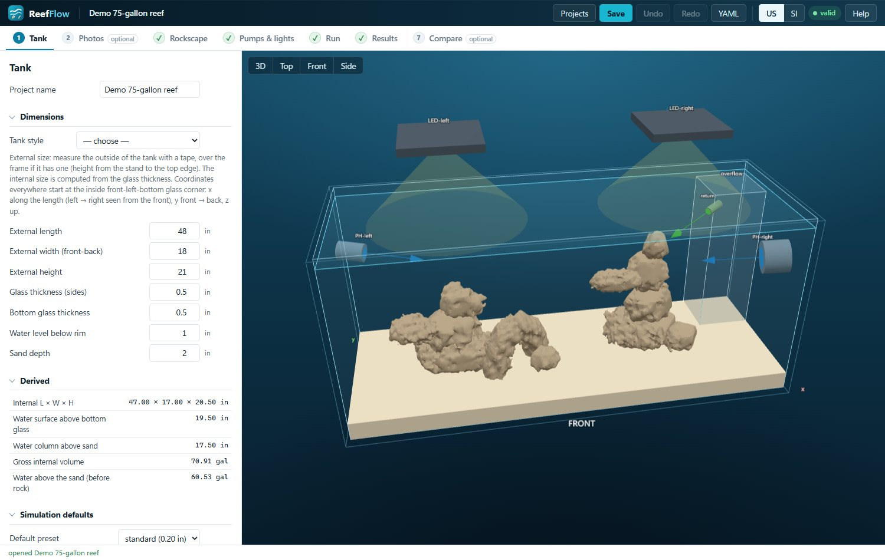
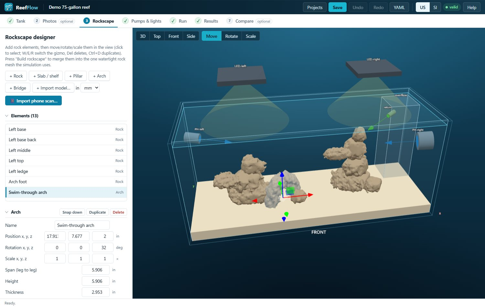
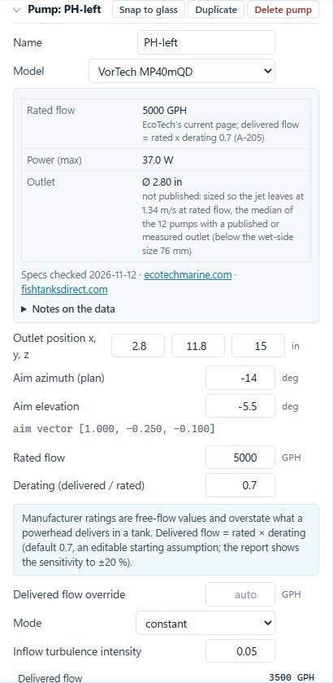
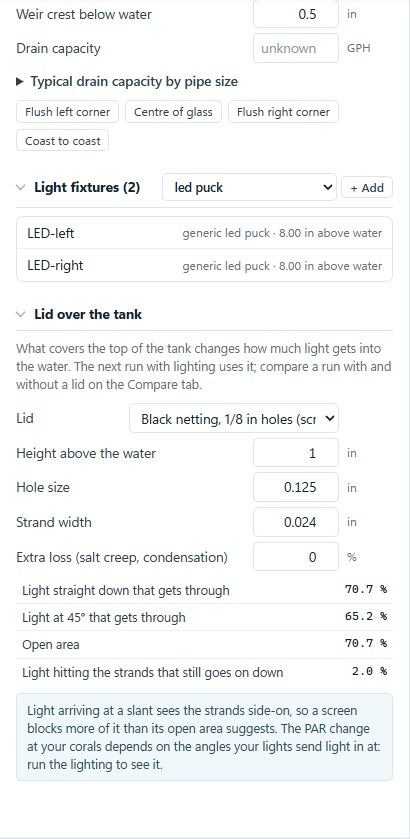
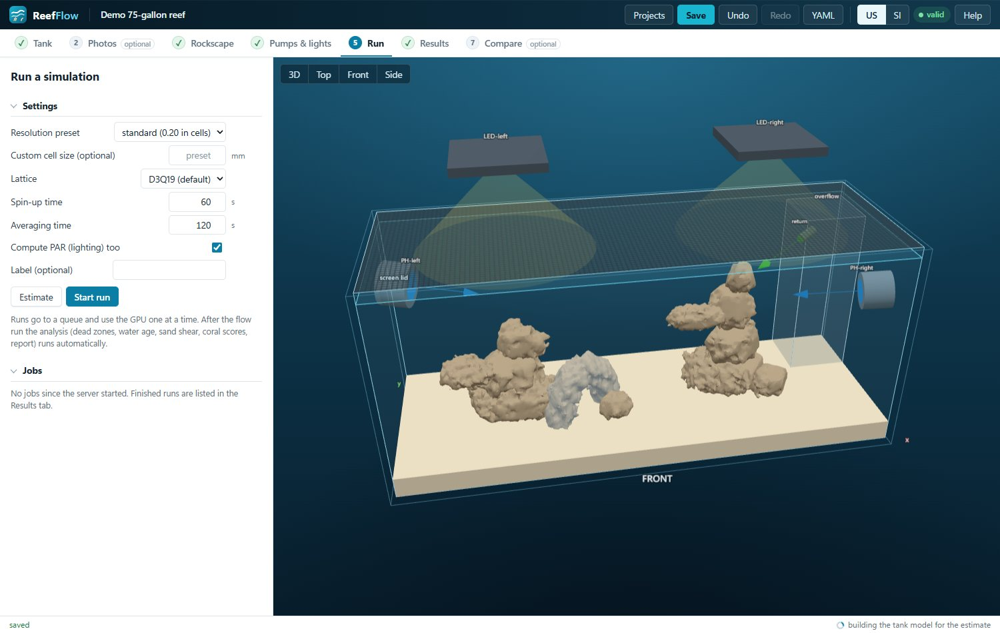
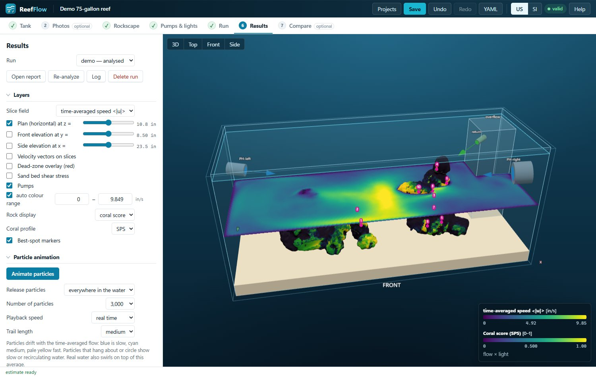
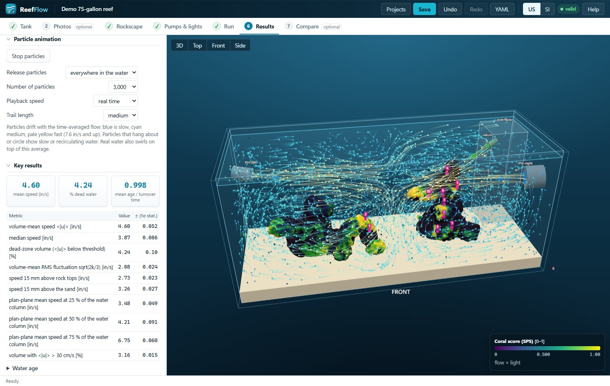

Getting started
ReefFlow runs in your web browser, but everything happens on your own computer. Nothing is uploaded, and it works without the internet.
- Double-click ReefFlow.bat in the ReefFlow folder. A console window opens and your browser shows ReefFlow. Keep the console open while you work; closing it stops ReefFlow.
- The welcome window lists your projects. Start with From the 75-gallon demo: a complete example tank with rock, pumps, an overflow and lights, ready to run.
- The steps along the top go left to right. A green tick shows a step that is done for this project.

The 5-minute demo
- Create a project From the 75-gallon demo.
- Go to 5 Run, choose preview and press Start run. The progress shows next to the Run tab.
- When it finishes, open 6 Results. Press Animate particles and set Release particles to at the pump outlets to watch where your pumps push the water.

1Tank
Enter the outside size of your tank, measured with a tape over the frame, plus the glass thickness, how far below the rim the water sits, and the sand depth. ReefFlow works out the inside size and the water volume. The US / SI switch at the top changes every number between inches/gallons and millimetres/litres.

2Rock: three ways in
The rock decides where the water can go, so it is worth getting roughly right. Pick whichever fits your tank.
A new tank: build it from pieces (tab 3, Rockscape)
Add rocks, slabs, pillars, arches and bridges, then drag them into place in the 3-D view. Move, Rotate and Scale work like in any 3-D program; numbers can be typed too. Press Build rockscape to join the pieces into one rock for the simulation. The demo's rockscape is built this way, so you can take it apart to see how.

An existing tank: from photos (tab 2, Photos)
Take a photo from the top (pumps off, so the surface is still) and from the front and one end. Click the tank corners on each photo, check the rock outline, and ReefFlow builds the 3-D rock from the photos, correcting for the glass and water bending the view. Use my phone shows a QR code so you can take and send the photos straight from your phone over your home Wi-Fi.
Dry rock: a phone 3-D scan
If the rock is out of the water, scan it with a phone scanning app (Polycam, Scaniverse and similar) and use Import phone scan on the Rockscape tab. ReefFlow cuts away the table, closes holes and scales it to your tape measurement.
Shaping any of these: sculpt
Sculpt the rockscape works like a terrain tool: Raise pulls rock toward you, Lower pushes it away, Smooth rounds off, Flatten makes shelves and Tunnel drills caves. The mouse wheel sets the brush size.
4Pumps, overflow, lights and lid
Every Model list has real products grouped by brand, plus generic types at the top. Pick yours and ReefFlow fills in its published specs. A card under the list shows each number, where it came from, and links to the sources.


- Powerheads: click one in the view and drag it; Rotate mode aims it. Snap to glass puts it on the nearest glass.
- Return pump: ReefFlow uses the maker's head-flow curve where one is published, so enter your head height (sump to tank) and a fittings allowance. It warns if the water leaves the nozzle so fast that the real flow would be lower.
- Overflow: pick your overflow box to get its rated capacity. ReefFlow warns when the return pump sends more than it can take.
- Lights: set the position, height above the water and tilt. The yellow cone shows the beam.
- Lid: pick what covers the tank. Glass loses about 12 % of the light straight down; a black 1/8 in screen passes 71 % straight down and less at a slant. Run with and without the lid and compare.
5Run
Choose a resolution and press Start run. Tick Compute PAR to include the lighting. Estimate tells you the size and expected time before you start.
| Preset | Detail | Time, 75 gal (RTX 3070) | Good for |
|---|---|---|---|
| preview | 10 mm cells | about 5 min | a quick look at the overall flow |
| standard | 5 mm cells | about 13 min | comparing layouts; the default |
| fine | 3 mm cells | about 75 min | flow close to the rock and sand |

6Results
Results open as layers you can switch on and off.
- Slices through the water coloured by speed, water age or PAR. Drag the sliders to move them.
- Rock coloured by coral score: how well each spot suits SPS, LPS or soft corals, from the flow and the light together. Numbered markers show the best spots.
- Dead-zone overlay and sand bed shear: where the water stalls and where detritus will settle.
- Particle animation: thousands of particles carried by the average flow. Released everywhere, they show the overall circulation; released at the pumps, they show each jet.


Open report gives a full HTML report with the key numbers, figures and the best coral spots, for saving or sharing.
7Compare
This is where ReefFlow earns its keep. Change one thing (move or re-aim a powerhead, raise the lights, add a lid), run again, and compare the two runs. ReefFlow shows the difference maps and flags only the changes that are bigger than the run-to-run noise.
How far to trust it
- Right at the surface of the sand and rock, flow is under-predicted at the usual resolutions, so dead zones look a bit worse than they are. Finer runs help.
- Powerhead flow ratings are free-flow figures; ReefFlow assumes pumps deliver 70 % of them in a tank. You can change that per pump.
- Rock from photos comes out a little chunkier than the real thing, because photos cannot see into every gap.
- Light output is estimated from published measurements or the wattage. If you have a PAR meter, calibrating to your readings beats any estimate.
FAQ
Where are my projects saved?
In the reefflow_workspace folder next to ReefFlow, one folder per project. The welcome window shows the exact path.
My pump or light is not in the list.
Pick the closest generic type and type the rated flow (and for lights the wattage) yourself. Every number can be overwritten.
A run failed or stopped.
Open the run's Log on the Results tab. Most problems are flagged before a run starts: the badge at the top right turns orange or red, and clicking it lists what to fix.
Keyboard shortcuts
Ctrl+S save · Ctrl+Z / Ctrl+Y undo / redo · W E R move / rotate / scale · Del delete · Ctrl+D duplicate · sculpt brushes 1–5